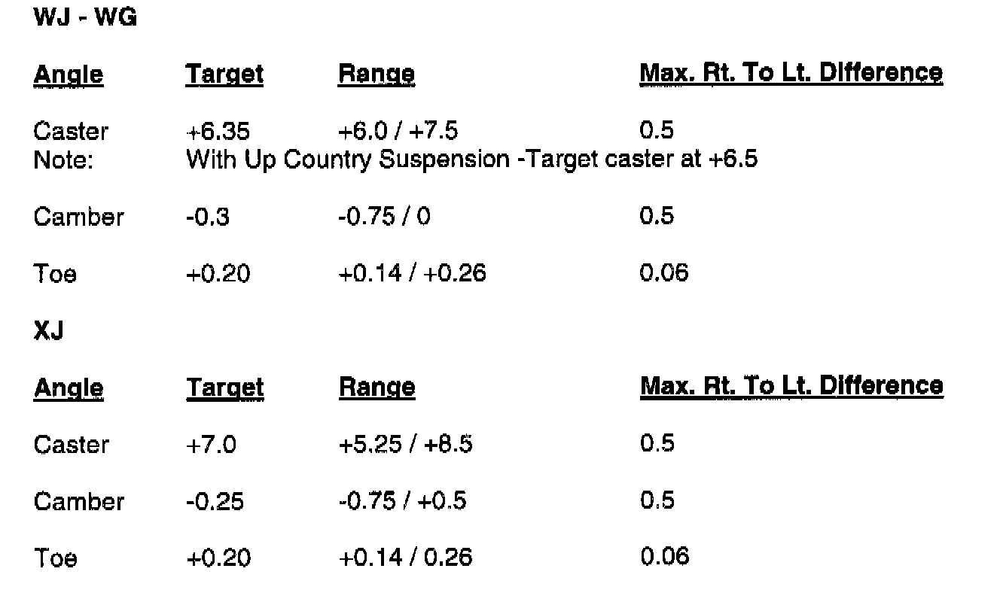
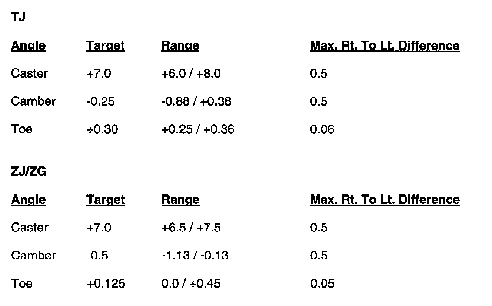
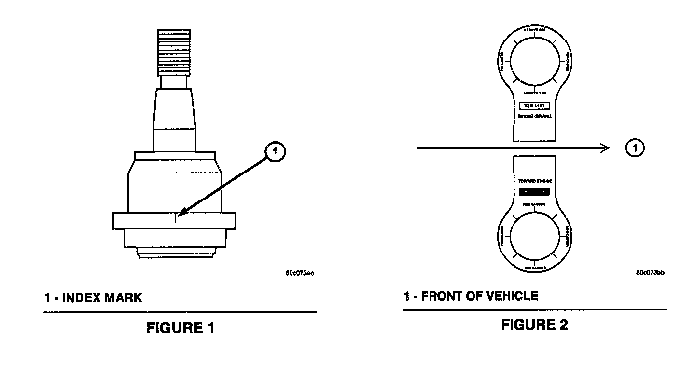

Repair Procedure
Set the vehicle up on the alignment rack and check the alignment against the specifications listed in the applicable service manual. The specifications shown below are specific targets, which will provide the optimum performance for the vehicles listed above. The only adjustments, which can be made with the original factory equipment, were caster, toe in and steering wheel center. 1999 and 2000 Grand Cherokee (WJ), caster adjustment was not provided. The new ball joints will offer adjustments of up to 1.5 degrees for camber and caster where required.

Alignment Specifications (Degrees)
Camber adjustment
If cross camber is greater than 0.5 deg., select the wheel furthest from the preferred value and replace that ball joint with the appropriate offset ball joint listed above. The target value of the adjusted side must equal the unadjusted side, providing a cross camber value of 0.0 deg. Never compensate for drift with additional cross caster. This could compromise vehicle handling.
NOTE:
WHENEVER CHANGING THE SETTING ON THE BALL JOINT FOR ALIGNMENT, THE ALIGNER HEADS MUST BE RE-COMPENSATED. ERRORS WILL RESULT IF THIS IS NOT DONE.
Caster Adjustment:
It cross caster is greater than the specifications shown above, utilize the offset ball joint to reduce the cross caster. If individual caster is above the specifications, utilize the cam or shim adjustment where possible. Use the offset ball joints if the caster cannot be adjusted using the other methods. Target caster is shown above if two offset ball joints are used. Offset ball joints will not effect drive line (propeller shaft) angles. If caster angles are changed using shims or cams, always road test the vehicle to verify that no drive line disturbance has been created. Verify steering wheel is centered. Never compensate for drift with additional cross caster. This could compromise vehicle handling.
Ball Joint Installation:
1. Remove the wheel, and tire assemblies.
2. Remove the brake caliper and rotor.
3. Remove the tie rod from the knuckle.
4. Remove the hub, bearing, axle shaft and nut.
5. Remove the nuts from the upper and lower ball joints.
6. Strike the steering knuckle with a brass hammer to loosen the knuckle from the ball joint. Lower the knuckle from the studs.
7. Using the ball joint removal tool Number 4142F, remove the upper ball joint.
B. Position the template supplied in the ball joint package on the top of the axle yoke.

9. Position the offset ball joint in the appropriate position using the reference mark located on the largest diameter on side of the ball stud with the desired change mark on the template (see Figure 1 & Figure 2)
10. Using the installation tool, number 4142F, and the installation sleeve provided in the package, press the ball joint half way into the bore. Remove the template and press the ball joint the remainder of the way into the bore until fully seated.
11. Install the dust boot and grease fitting provided.
12. Install the knuckle. Tighten the lower nut to 125 Nm (90 ft. lbs.). Tighten the upper nuts to 100 Nm (75 ft. lbs.).
13. Install the cotter pins
14. Install the axle shaft, hub and bearing. Tighten the nut to 100 Nm (75 ft. lbs.).
15. Install the rotor and caliper. Tighten the caliper bolts to 15 Nm (10 ft. lbs.).
16. Grease the ball joint.
17. Install the wheel and tire assembly. Tighten the lug nuts to 125 Nm (100 ft. lbs.).